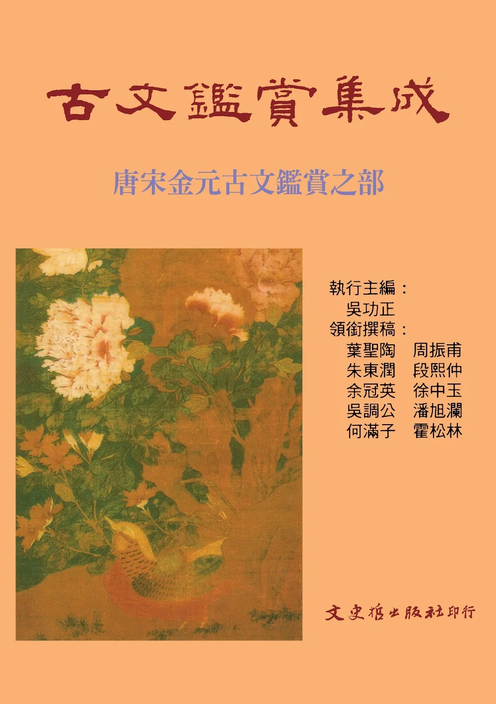

中國文學批評史
NT$ 500

中國文學之理論（上冊）
NT$ 200

中國文學理論專論研究（一）
NT$ 0

詩學理論與評賞－趣味之部
NT$ 160

歷代古文析評－兩漢魏晉之部
NT$ 0

歷代古文析評－兩漢魏晉之部
NT$ 0

歷代古文析評－唐宋之部
NT$ 0

歷代古文析評－唐宋之部
NT$ 0

文學名著研評舉隅
NT$ 220

歷代國文名著研析（一）
NT$ 200

歷代國文名著研析（二）
NT$ 200

古文快筆貫通解
NT$ 300

國文經緯貫通大義
NT$ 360

古文鑑賞集成（一）∼（三）
NT$ 1200
古文鑑賞集成（一）∼（三）
NT$ 0
三蘇文選校注評析新編
NT$ 320

蘇詩彙評
NT$ 3600

蘇詞彙評
NT$ 700
蘇文彙評
NT$ 900
釐清古文學疑案
NT$ 380

歷代文選述解
NT$ 400

文心雕龍讀本（上、下篇）
NT$ 1000

文心雕龍札記
NT$ 280
從詩中走過來：論羅門．蓉子
NT$ 560

從詩想走過來：論羅門．蓉子
NT$ 200

我的詩國（BOD）
NT$ 800

我的詩國（BOD）彩色
NT$ 9600

現當代西洋文學批評綜述
NT$ 400